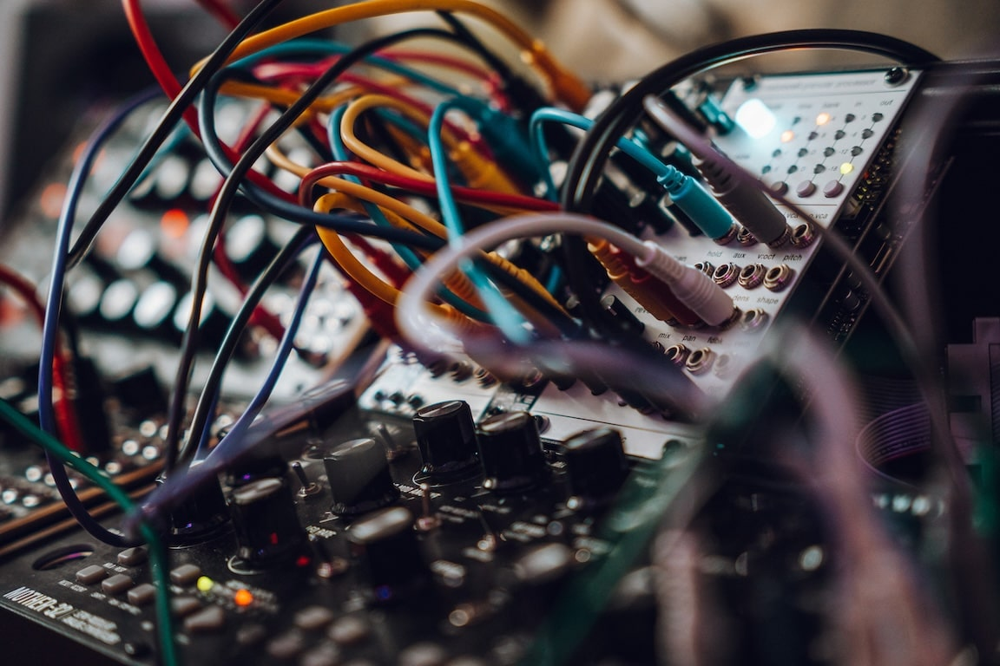

Soundwaves.wav
In this little corner of the internet I share some of the noise that few people might call music, made by me.

Photo of my modular synthesizer with colorful cables.For some years now I've been messing around with different musical instruments from bass guitar to modular synthesizers. I'm far from being a professional musician, but I truly enjoy learning and working with different instruments, and most importantly having fun in the process.
Mostly I choose the generative approach, we can call it a conversation between man and machine, and interwining joruney between flesh and circuitry. A collaboration of human feelings and engineered circuits to create something new and unique.
For now you can find my noise in two places:
Ent Bien
My generative drone ambient project, mostly made with my portable modular synthesizer.
Listen to it on my Soundcloud.
BackpackJams
A more random collection of improvised jams with different electronic instruments.
Listen to it on my Instagram.
---
I hope you enjoy.